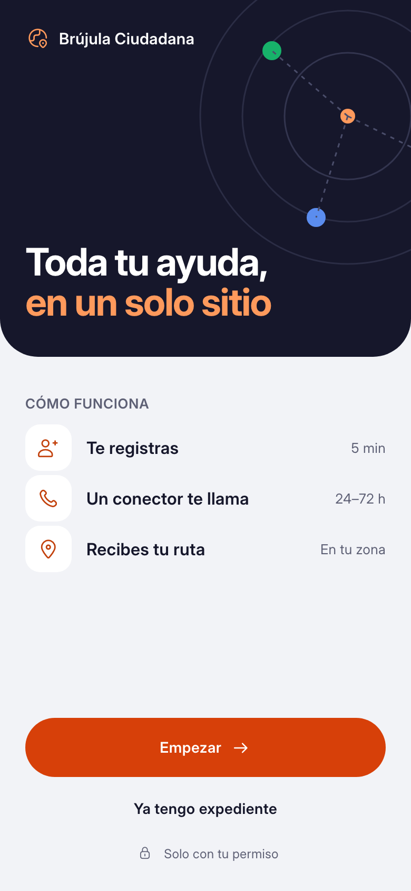
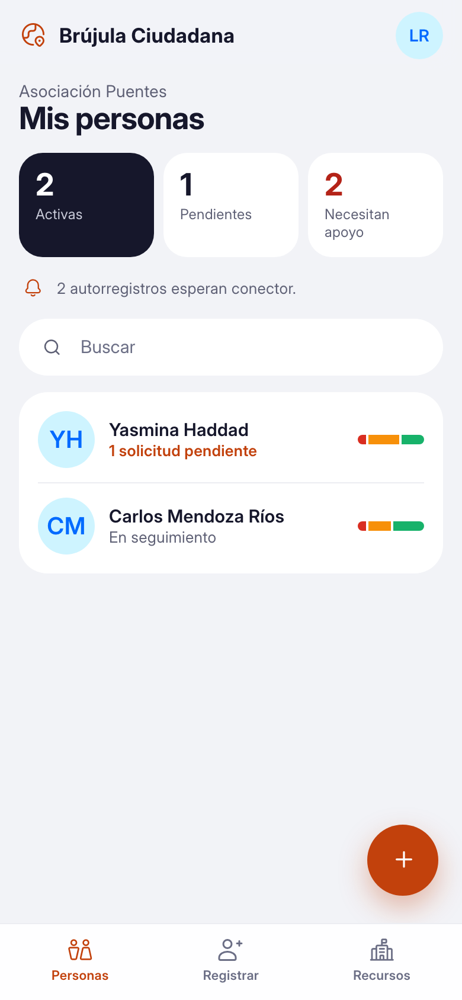
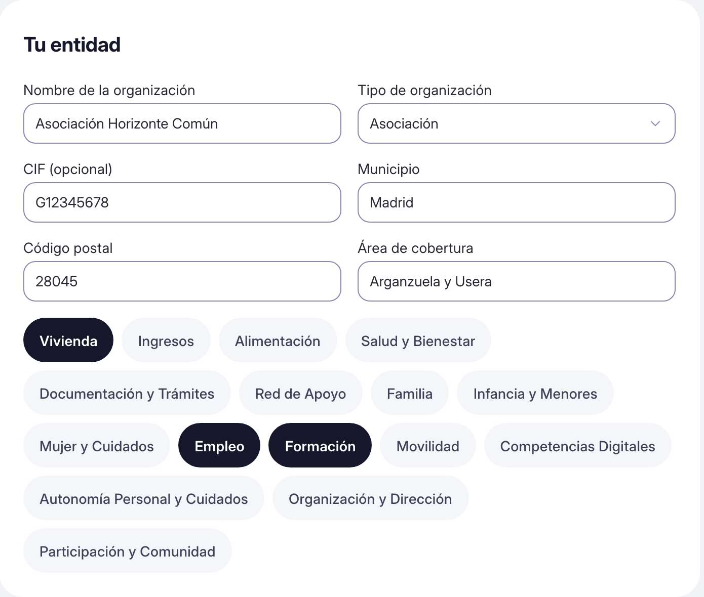
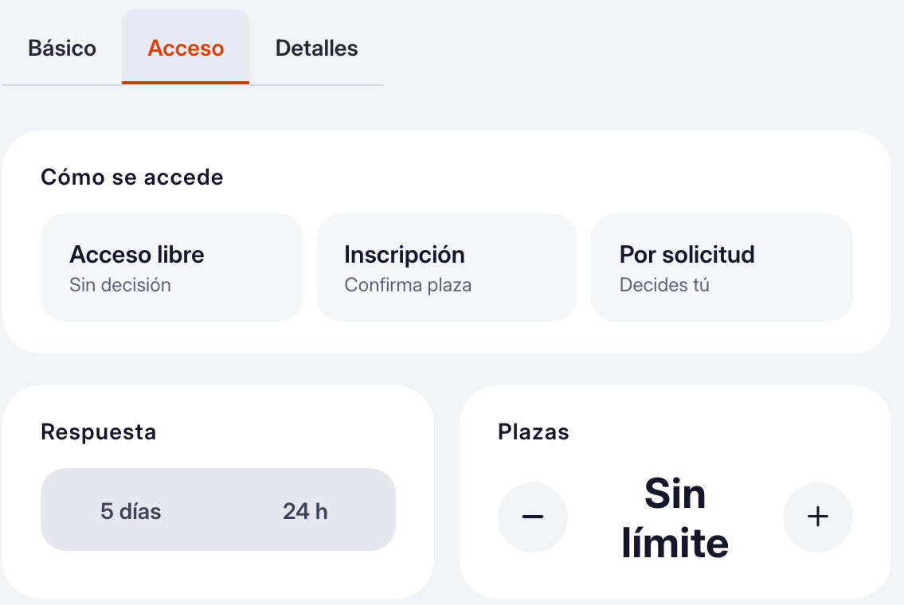
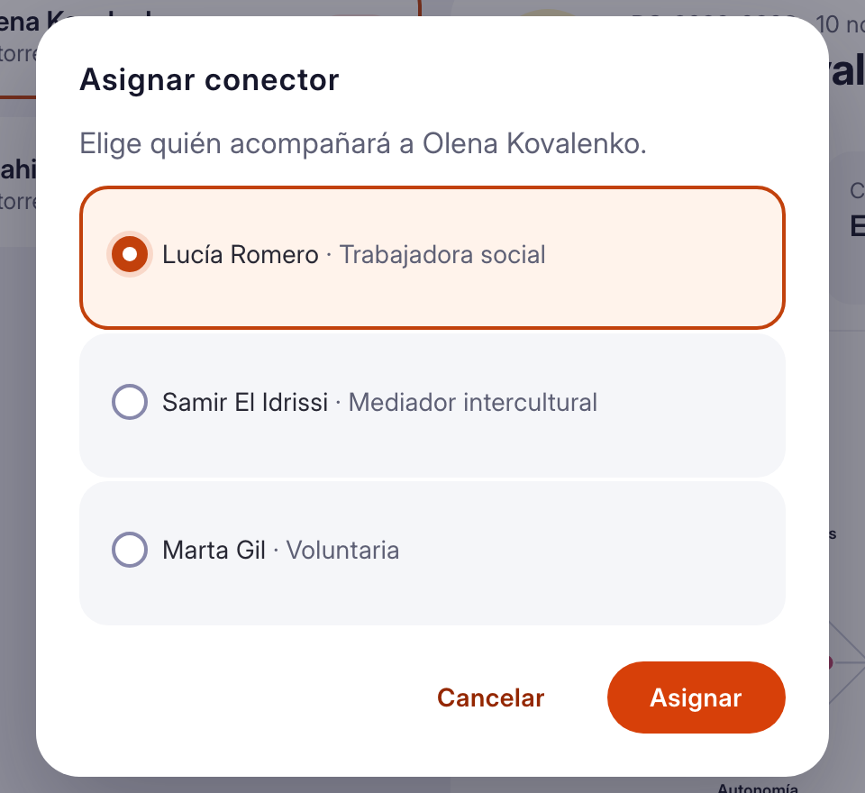
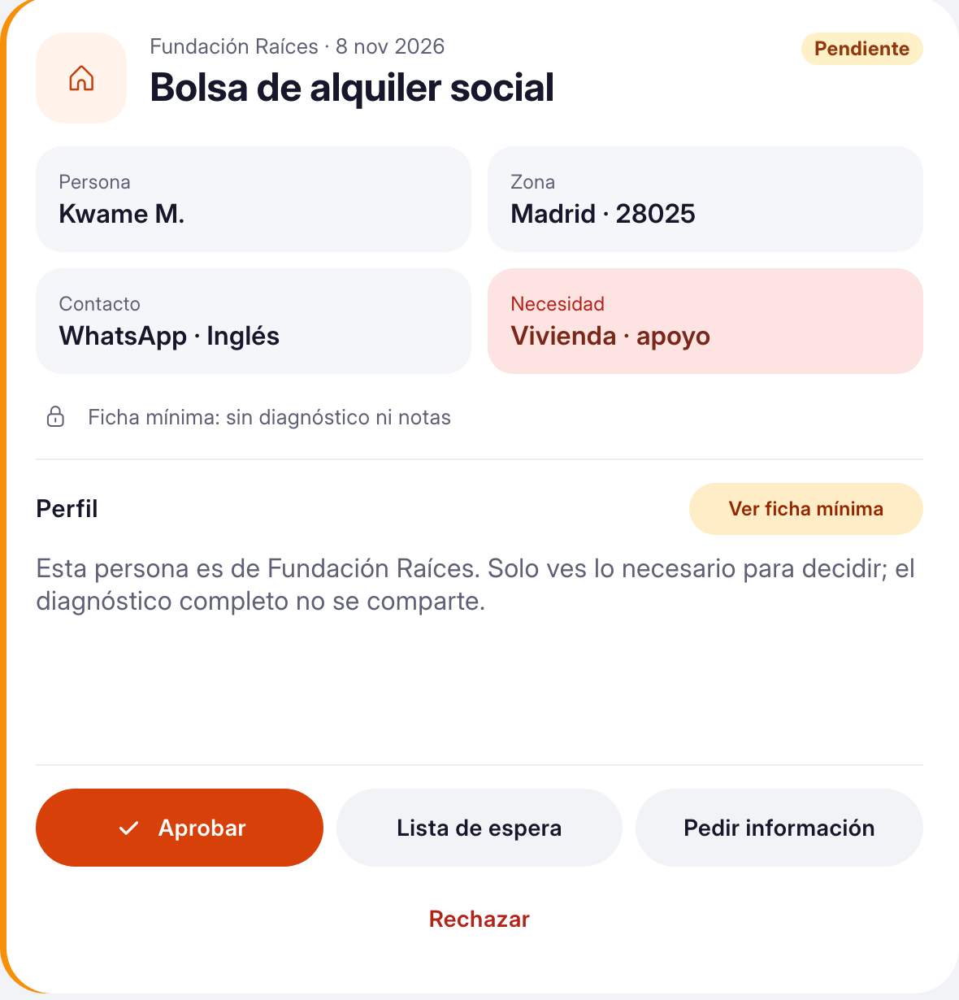
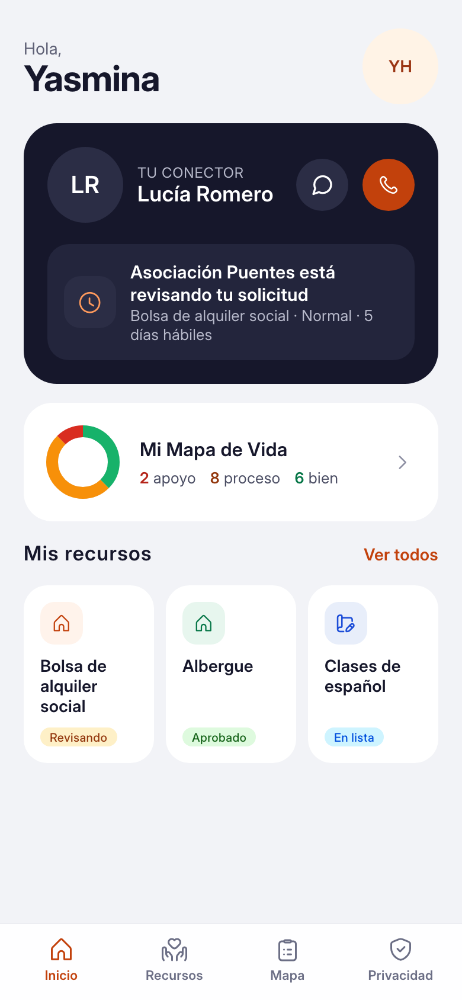
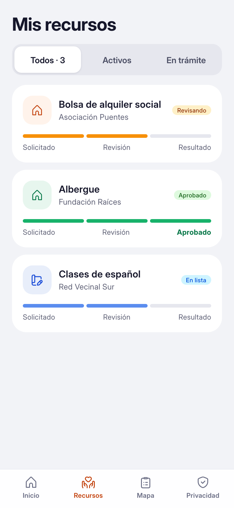
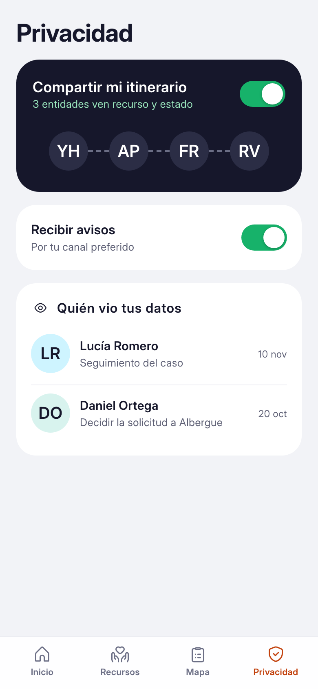

Demo de concepto
Pedir ayuda hoy es ir de ventanilla en ventanilla. Aquí es distinto: te registras una vez, cuentas cómo estás y se te conecta con lo que necesitas. Pensada ahora para personas migrantes.
Te registras solo una vez y ves cómo va todo.
Conoces a la persona y la llevas al recurso adecuado.
Decides con lo justo y gestionas todo en un lugar.
| Rol | Superficie | Qué hace |
|---|---|---|
| Ciudadano | Móvil | Se registra, llega a sus recursos y sigue su caso desde el teléfono. |
| Conector | MóvilEscritorio | Acompaña a las personas y las lleva a los recursos. |
| Entidad | EscritorioMóvil | Publica sus recursos y decide quién entra. |
| Registro de entidad | EscritorioAdmin | Suma una entidad nueva a la red. |

Ciudadano · móvil

Conector · móvil
Cómo se conectan
La entidad, paso a paso
El administrador da de alta a la entidad: quién es, dónde trabaja y en qué áreas ayuda.
Ahí mismo carga los primeros recursos que ofrece. Al verificar el correo, queda lista.

Desde Mis recursos crea uno nuevo en tres pasos: qué es, cómo se accede y los detalles.
Elige si es libre, con inscripción o por solicitud, y cuánto tarda en responder. Mientras escribe, ve cómo lo verán los conectores.

Las personas llegan por sus conectores, o se registran solas y quedan por asignar.
La entidad elige un conector para cada una. En Mis personas ve a todas, con su Mapa de Vida.

Cuando alguien pide entrar a un recurso, ve lo justo: contacto y la necesidad, sin el diagnóstico completo.
Puede aprobar, dejar en espera, pedir más datos o rechazar con un motivo. La persona lo ve en su expediente.

Y al final, la persona
Desde su teléfono ve los recursos a los que se postuló y si cada uno está en revisión, aprobado o en lista de espera.
Su conector está a un toque: puede escribirle o llamarle.
Ve quién consultó su información y qué compartió, y puede cambiarlo.

Su inicio

Mis recursos

Privacidad